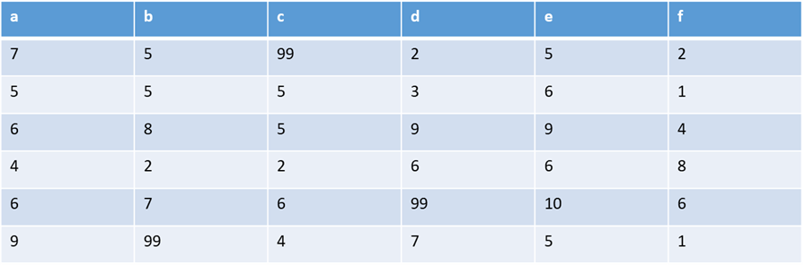
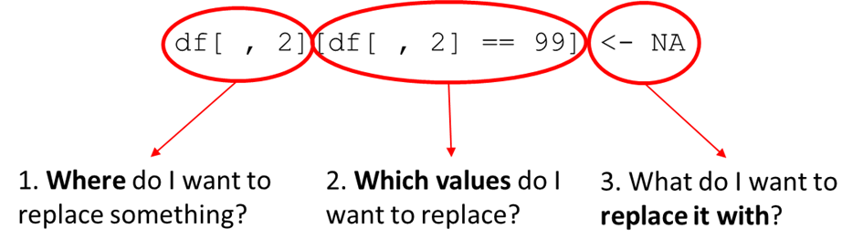
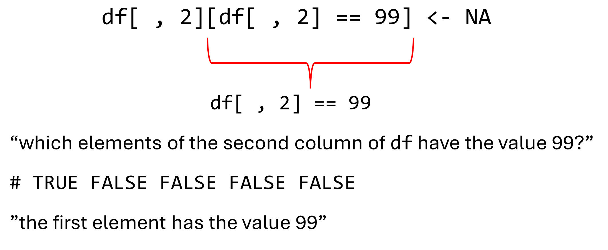
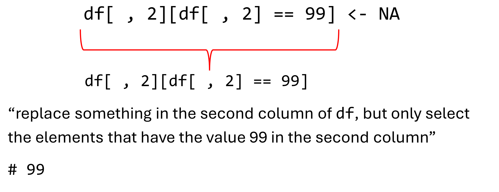
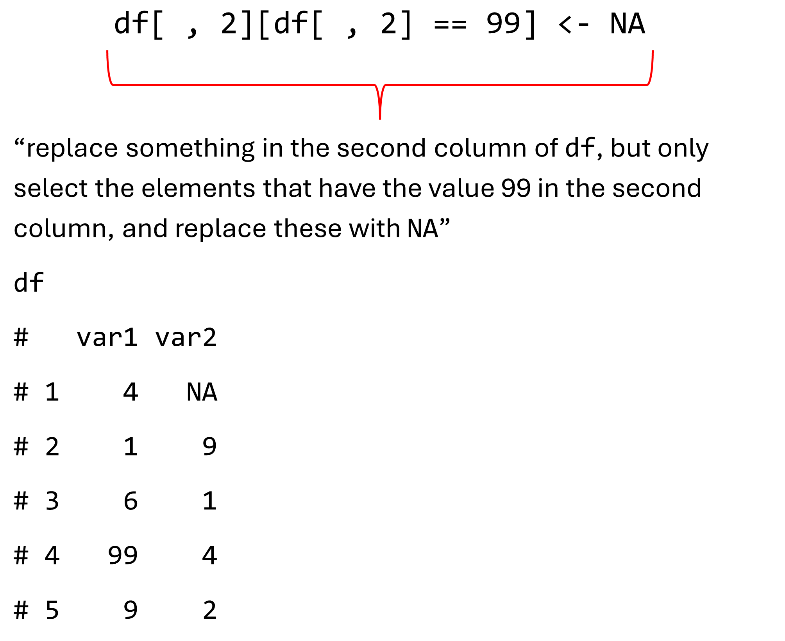
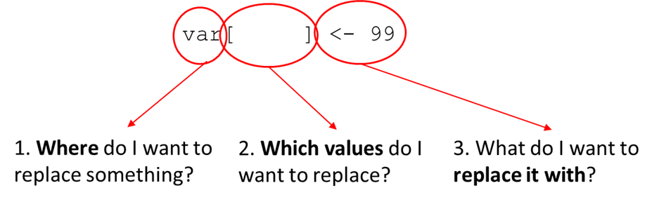
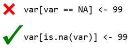
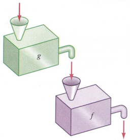

Chapter 5 Cleaning & Summarizing Data
Download link for Exercise 3 and the relevant Data: exercise 3
Download link for Answers to Exercise 3: solutions exercise 3
5.1 Recoding
In Module 2 we said that you should always check your data as the first step in your analyses. After checking your data, your second step will often be to clean your data. Raw data is often messy and requires you to treat missing values and errors in the data.
In some statistical analysis programs, you as a user specify what is a missing value is. These are often improbable values like 99.

R will treat these as numbers (because they are), not as missings. We need to recode these values to NAs.
## [1] 4 1 6 99 9Supposing that the 99 should be a missing value, we recode that specific value into an NA by making use of indexing:
## [1] 4 1 6 99 9## [1] 4 1 6 NA 95.2 Recoding with Nested Indexing
For data cleaning it is often necessary to make use of complex nested indexing patterns to select the specific elements you want to change.
Let us demonstrate using the following sample data frame:
## var1 var2
## 1 4 99
## 2 1 9
## 3 6 1
## 4 99 4
## 5 9 2## var1 var2
## [1,] FALSE TRUE
## [2,] FALSE FALSE
## [3,] FALSE FALSE
## [4,] TRUE FALSE
## [5,] FALSE FALSE## var1 var2
## 1 4 NA
## 2 1 9
## 3 6 1
## 4 NA 4
## 5 9 2If we only wanted to change the 99 in the second column, we would do the following:
df <- data.frame(var1 = c(4, 1, 6, 99, 9),
var2 = c(99, 9, 1, 4, 2))
df[, 2][df[, 2] == 99] <- NA
df## var1 var2
## 1 4 NA
## 2 1 9
## 3 6 1
## 4 99 4
## 5 9 2The structure of this nested indexing and data cleaning is as follows:




If we wanted to do it the other way around, and recode NAs to other values such as 99, the structure of the indexing would remain the same. Thus, we would still follow the following format:

Only in this instance we have to make use of the is.na() function to detect NAs, because NAs are special characters that work differently:
## [1] 4 1 6 NA 9## [1] 4 1 6 NA 9As shown in the code above, nothing happens when we use var == NA.
## [1] NA NA NA NA NAWe instead need to use the is.na() function
## [1] 4 1 6 NA 9## [1] 4 1 6 99 9In short:

START EXERCISE 3.1
5.3 Functions in Functions
Remember, all functions take the following form:


We can extend this principle to a sequence of functions where the output of one function becomes the input of another function. As illustrated here with the output of function g becoming the input of function f.

We can use this principle to change the following code:
## [1] 146.7To this:
## [1] 146.75.4 Doing Something to every row/column
One of the advantages of R we have already discussed is that it is a vectorized programming language. Meaning, that in most cases if an operation is performed on a vector it is performed on each element in that vector automatically, without the need for us to code our operation to work specifically on a vector.
Things get a little more complicated if we want to perform actions across every row and column in a data frame or matrix. This is not done automatically in R as for vectors. Luckily there are certain functions we can use that do allow us to perform operations across either rows or columns.
For example, when we want the mean of a vector we use the following operation:
## [1] 6.5If we want the mean of a data frame:
grades <- data.frame(course1 = c(6, 4, 8),
course2 = c(7, 9, 8),
course3 = c(3, 3, 6),
course4 = c(10, 10, 9))We can make use of the colMeans() function:
## course1 course2 course3 course4
## 18 24 12 29We can use similar functions for rows, but first let us name our rows to make the resulting output easier to read.
## course1 course2 course3 course4
## 1 6 7 3 10
## 2 4 9 3 10
## 3 8 8 6 9## course1 course2 course3 course4
## student1 6 7 3 10
## student2 4 9 3 10
## student3 8 8 6 9The functions we use to get the means and sums for rows are rowMeans() and rowSums():
## student1 student2 student3
## 6.50 6.50 7.75## student1 student2 student3
## 26 26 31Taking means or sums is very common, but you could also be interested in obtaining something else, like the standard deviation for instance.
In that case you can use apply(), which is a function than can be used to “apply” any function over either rows or columns.
## course1 course2 course3 course4
## 6.000000 8.000000 4.000000 9.666667## course1 course2 course3 course4
## 6.000000 8.000000 4.000000 9.666667But we can also use other function besides mean().
## course1 course2 course3 course4
## 6 8 3 10## course1 course2 course3 course4
## 2.0000000 1.0000000 1.7320508 0.5773503The structure of the apply() function is as follows:
First, we name the object we want to apply a function over. In this case the grades data frame.
Second, we specify the margin, meaning whereover we want to apply the function. In this case we specified the second margin which are the columns by choosing 2 as the input. Since there are 1) rows and 2) columns, the second margin is the columns.
The rows are the first margin, so:
## student1 student2 student3
## 6.50 6.50 7.75Is the same as:
## student1 student2 student3
## 6.50 6.50 7.75Third, you specify the function you want to apply. In this case sd(), to calculate the standard deviations across all columns in grades. Note that we do not add the brackets () when we add the function as an argument in apply (otherwise it would try to enter the output of the function as the argument rather than the function itself as the argument).
5.4.0.1 Applying over Groups
Suppose we had the following data frame with a factor variable,
grades2 <- data.frame(course1 = c(6, 4, 8, 6),
course2 = c(7, 9, 8, 7),
course3 = c(3, 3, 6, 7),
course4 = c(10, 10, 9, 2),
gender = factor(c("male", "male",
"female", "female")))
row.names(grades2) <- paste0("student", 1:4)
grades2## course1 course2 course3 course4 gender
## student1 6 7 3 10 male
## student2 4 9 3 10 male
## student3 8 8 6 9 female
## student4 6 7 7 2 femaleand we wanted to know the mean score and standard deviation for course2 for each gender in our data frame.
In that case, we can make use of the tapply() function to apply a function for each group separately and return the output for each group.
## female male
## 7.5 8.0## female male
## 0.7071068 1.4142136Similar to apply(), we first start with naming the object we want to apply our functions over. This should typically be a vector, so not a data frame unlike in apply().
Second, we name the factor variable vector containing the groups across which we want to apply.
Third, we just like for apply name the function.
START EXERCISE 3.2